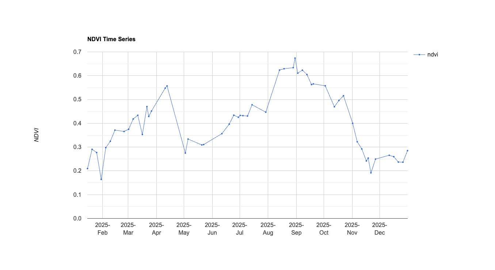

Agricultural engineer and Environmental Scientist using satellite imagery and geospatial tools to understand how soil, water, and vegetation interact across landscapes.
View ProjectsI'm Pramod Hegde, an agricultural and environmental scientist with a dual M.S. in Soil Science and Sustainable Agriculture from the University of Georgia and University of Padua, and a B.Tech in Agricultural Engineering from UAS Bangalore.
My work sits at the intersection of remote sensing, soil physics, and environmental data analysis. I use Google Earth Engine to process large-scale satellite datasets — combining that with ground-truth soil sampling and field monitoring to understand land-surface dynamics.
Currently working as Lab Manager at UGA's Soil Health Laboratory, where I oversee soil sampling programs, QA/QC protocols, and research on soil health parameters in biochar applications and drone-applicated cover cropping in agricultural systems.
Multi-temporal vegetation index analysis using Sentinel-2 and Landsat imagery to track annual greenness patterns and identify anomalies in crop and ecosystem health across agricultural landscapes.
View in GEESpatial mapping of surface soil moisture using NASA Soil Moisture Active Passive (SMAP) L-Band radiometer in Georgia.
View in GEE
Multi-temporal vegetation index analysis using Sentinel-2 to track seasonal greenness patterns and identify anomalies in crop and ecosystem health in a farmer's field.
View in GEEProcessing multi-spectral and SAR imagery in Google Earth Engine to extract vegetation indices, land surface temperature, and moisture proxies at scale.
Ground-truthing satellite-derived metrics with direct soil sampling, Hyprop/WP4C measurements, and CO₂ flux monitoring across experimental plots.
Statistical modeling in R and Python, reproducible workflows, and clear technical reporting for scientific and stakeholder audiences.